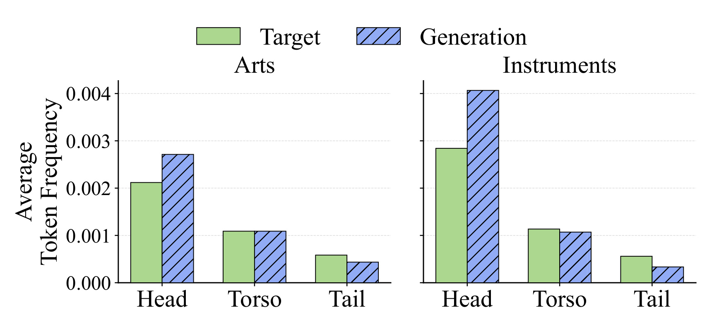
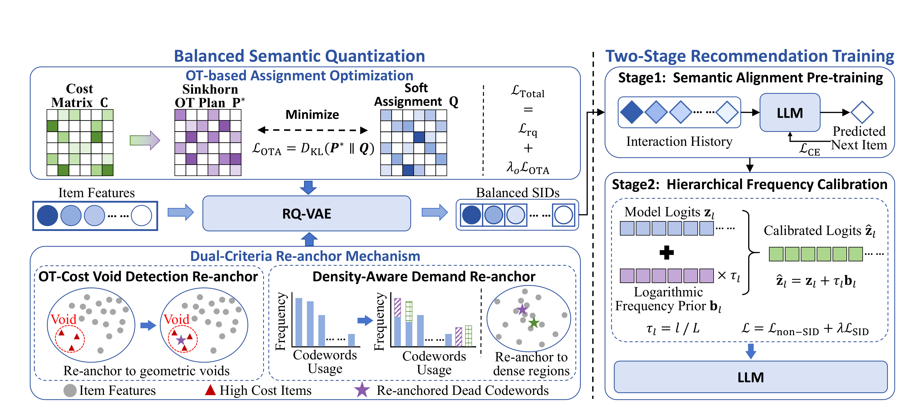
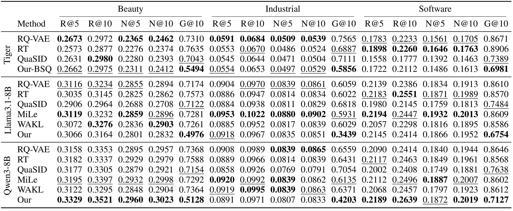
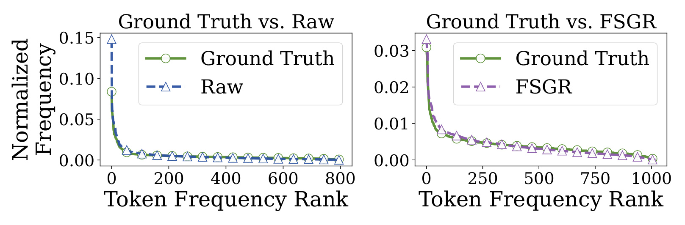
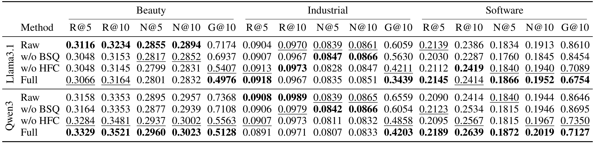
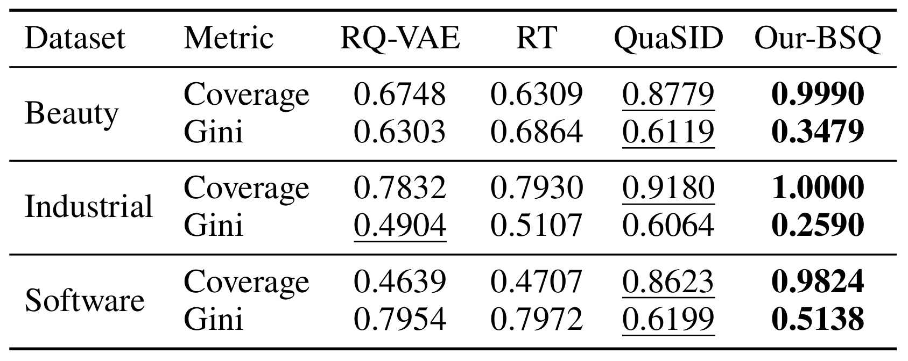
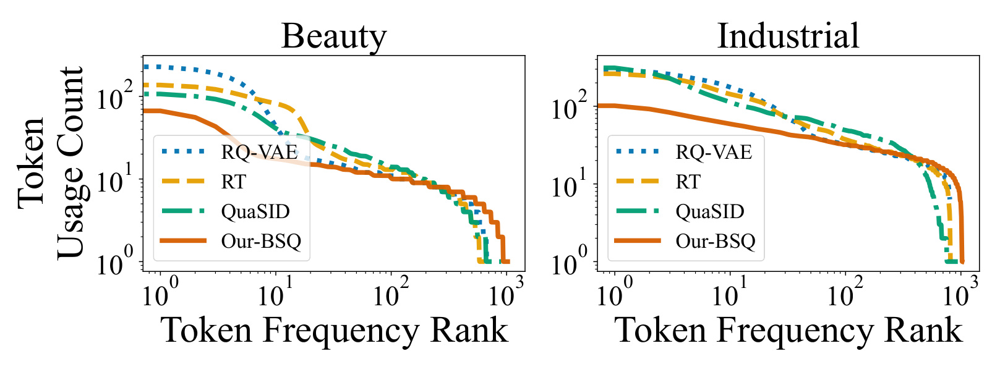
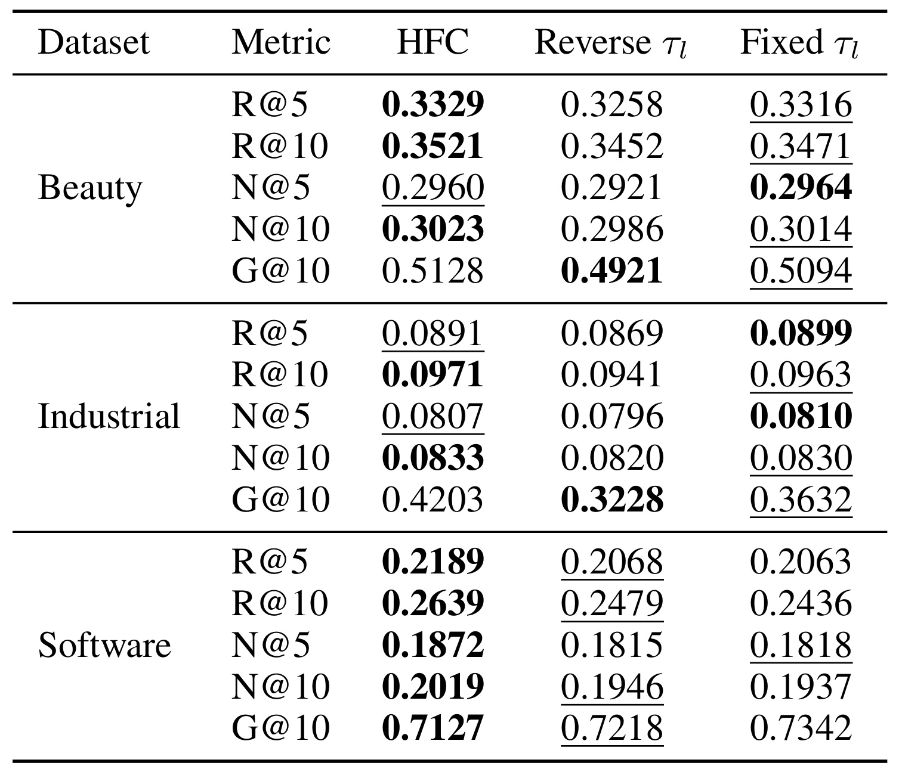

FSGR：缓解 SID 生成式推荐中的 Token 频率偏差
《FSGR: Mitigating Token Frequency Bias for Fair SID-Based Generative Recommendation》由 Yuchen Zheng、Sihan Xu、Jingwen Yang、Xiangrui Cai、Haiwei Zhang 与 Xiaojie Yuan 完成，作者均来自南开大学相关实验室。论文于 2026 年 8 月 13 日以 arXiv v1 公开，入口为 arXiv:2608.12845。本文讨论的是物品侧公平：同一个生成式推荐器是否会因 Semantic ID（SID）token 在训练集中出现频次不同，而把更多曝光持续分配给头部语义类别。PDF 首页存在 “Copyright © 2027, Association for the Advancement of Artificial Intelligence” 字段，但本轮没有核验到 AAAI 官方录用页面，因此这里只把它视为 arXiv 预印本，不写作已录用论文。论文正文称详细超参数会由补充材料和代码提供，但当前公开 PDF 没有附录，本轮也未核验到独立公开代码仓库。
SID 生成式推荐把物品表示成层级离散 token，却会系统性过预测高频 token、压低低频 token，使曝光进一步集中到头部语义类别。偏差在 SID 构造阶段已被不均衡码本写入表示空间，随后又被交互流行度和最大似然训练共同放大；直接套用统一强度的语言模型去偏还会破坏不同层级承载的粗细语义。
1. 背景和问题
1.1 SID 生成式推荐把排序问题改写成序列生成
传统判别式推荐往往为每个物品学习一个独立 embedding，再以点积或深层网络输出排序分数。这条路线高效，但物品表示常被绑定在特定数据域和固定物品集合中：新物品没有充分交互时难以学到可靠向量，跨域迁移时旧 embedding 空间也不容易直接复用。SID 生成式推荐换了一个接口。它先用 RQ-VAE 等残差量化器把物品内容向量压成若干层离散码字，例如四层 SID 就是由四个 token 构成的短序列；随后让 Transformer 或 LLM 根据用户历史自回归生成目标物品的 SID。这样，语义接近的物品可以共享前缀或部分码字，召回也变成受词表约束的序列解码，而不是在全量物品向量上逐一打分。
这种共享带来泛化，也带来新的耦合风险。在 item ID 表示里，一个物品是否热门主要影响它自己的训练次数；在 SID 表示里，同一个码字可能被大量物品共享。若一个上层码字代表宽泛且人口密集的语义类别，它会在许多物品 SID 中重复出现；若另一个码字只覆盖狭窄长尾语义，它几乎得不到使用。于是，表示阶段的码本占用差异会传给推荐训练。之后，热门物品又在交互日志中被更频繁地当作目标，标准交叉熵对每次 token 观察累积梯度，高频码字因此得到更强、更稳定的似然信号。论文关注的不是一般意义上的“热门物品排在前面”，而是流行度如何经过共享的层级 token 结构传播，使一整个语义类别获得额外生成概率。
1.2 Token Frequency Bias：发生在生成 token 层的曝光倾斜
作者把目标问题定义为 Token Frequency Bias：模型系统性高估高频 SID token 的概率，同时低估低频 token，最终让与高频 token 关联的物品获得过多曝光，让长尾 token 关联物品曝光不足。这个定义有两个值得注意的边界。第一，它是物品侧、token/category exposure 口径，不是用户群体之间的敏感属性公平；第二，它作用于自回归路径。浅层 token 一旦偏向某个头部前缀，后续可达物品集合已被收窄，因此末端重排未必能完全补救。
论文用 LC-Rec 在 Amazon “Arts, Crafts and Sewing” 与 “Musical Instruments” 上做先导分析。作者按训练频次把 token 排序，并划为 Head（前 10%）、Torso（中间 50%）和 Tail（后 40%），再比较真实目标与模型生成结果中三组 token 的比例。这里的分组比例描述的是 token 频率阶层，而不是物品销量分桶；它试图回答的是生成器是否在已有不均衡之上继续放大头部。

Figure 1 中绿色柱是 ground truth，斜线蓝柱是生成结果。Arts 数据上 Head 从约 0.0021 上升到约 0.0027，而 Tail 从约 0.0006 降到约 0.0004；Instruments 上 Head 从约 0.0028 上升到略高于 0.004，Tail 则从约 0.00055 降至约 0.0003。Torso 的变化相对小，偏差方向却在两个数据集一致：模型不是随机重排频次，而是把概率质量从尾部向头部迁移。需要谨慎的是，图中纵轴为平均 token frequency，不能直接等价为最终物品曝光率或用户效用；但它足以说明标准 SID 生成器会放大训练分布中的频率层级，因此有必要在生成链路内部而非只在结果列表末端处理公平。
1.3 为什么只修码本或只修 LLM 都不够
论文把成因拆成两个阶段。SID 构造阶段，普通 RQ-VAE 按最近码字做局部量化，没有约束每个码字获得近似均匀的样本质量；部分码字长期闲置，部分区域又挤入太多样本，偏差在推荐器开始训练前就已经存在。推荐训练阶段，即使 SID 比较均衡，用户日志的热门度和 MLE 的频次累积仍会重新引入倾斜。已有 SID 工作多关注冲突率、语义质量或码本上限；已有公平推荐通常调整排序列表、表示或排序 loss；通用 LLM token 去偏则常对所有位置或 token 使用统一强度。这三类工具都只覆盖了链路的一部分。
SID 的层级结构又让统一校准变得危险。较浅层码字承载粗粒度类别，强行大幅修正可能让模型选错整个语义分支；较深层码字区分同一粗类别里的细粒度物品，需要更强校准才能避免尾部 token 被前缀条件概率压住。FSGR 因而提出一个双端方案：在量化器侧让码本使用更均衡，在生成模型侧先学语义映射、再按层级做频率校准。研究问题可以概括为：能否在不明显破坏 Recall/NDCG 的前提下，同时减少表示期与训练期造成的 SID token 频率偏差，并用中间量化指标证明公平改善确实来自预期机制？
2. 方法
FSGR 的结构有两个明确时间尺度。Balanced Semantic Quantization（BSQ）训练一个更均衡的 RQ-VAE，产出固定 SID；Two-Stage Recommendation Training 再以这些 SID 训练 TIGER、Llama3.1-8B 或 Qwen3-8B 等生成 backbone。核心贡献不是在一次 loss 中堆叠两个正则，而是把偏差源与干预位置对齐：OTA 与 DCR 修量化分配，HFC 修自回归预测。

Figure 2 左侧从 item features 出发。OTA 先由样本-码字 cost matrix 求一个均匀边际的 Sinkhorn OT plan，再让 RQ-VAE 的 soft assignment 靠近该计划；DCR 同时把 dead codewords 分配给几何空洞和高密度需求区。两路信号共同进入 RQ-VAE，输出 balanced SIDs。右侧第一阶段以交互历史预测下一个 SID，只做语义对齐；第二阶段在模型 logits 上叠加按层级缩放的对数频率先验，再以区分 SID 与非 SID 位置的目标微调。图中虚线竖隔把 SID 构造与推荐训练分开，这一点对复现很关键：OTA/DCR 不是在线解码时运行的重排器，HFC 也不反向重建码本。
2.1 从 RQ-VAE 到最优传输分配
给定用户集合 $\mathcal U$、物品集合 $\mathcal I$ 和用户历史 $H_u=[v_1,\ldots,v_n]$，每个物品 $v$ 先被量化为 $L$ 层 SID $s_v=[s_v^1,\ldots,s_v^L]$。推荐器按前缀生成下一物品的各层 token：
符号解释：$\Theta$ 是推荐模型参数，$s_{v_{n+1}}^{l}$ 是目标物品在第 $l$ 层的码字，$s^{<l}$ 是此前已生成的 SID 前缀。该式说明曝光不是一个独立物品分数，而是层层条件概率的乘积；浅层高频 token 的偏差会改变之后全部候选分支。它也是后续 HFC 要按层处理而非只给最终物品加权的原因。普通 $L$ 层 RQ-VAE 在第 $l$ 层对残差 $r_l$ 选最近码字 $e_{lk}$，得到 $q_l$ 并把 $r_{l+1}=r_l-q_l$ 传到下一层，其基础目标同时约束重构、码本更新和 commitment：
符号解释：$e_v$ 与 $\hat e_v$ 分别是输入物品向量和重构向量；$r_l$ 为当前残差，$q_l$ 是被选码字向量；$\operatorname{sg}$ 表示停止梯度，$\beta$ 控制 encoder 对码字的承诺强度。这个目标能让重构误差下降，却不要求 $K$ 个码字得到相近使用量，所以“最近码字”会不断强化既有密集区域。
OTA 把一个 mini-batch 的量化改写为熵正则最优传输。对 $B$ 个样本与 $K$ 个码字构造距离矩阵 $C$，把样本边际设为 $\mu=\frac1B\mathbf 1_B$，码字目标边际设为 $\nu=\frac1K\mathbf 1_K$。这相当于先定义一个兼顾语义距离与占用均衡的教师分配，再让量化器学习该分配，具体求解：
符号解释：$\Pi(\mu,\nu)$ 是同时满足两侧边际的传输矩阵集合，$\langle P,C\rangle$ 衡量把样本分给码字的距离成本，$H(P)$ 是熵，$\epsilon$ 调节解的平滑性，$P^*_{ik}$ 是样本 $i$ 应分给码字 $k$ 的质量。均匀码字边际把“每个 batch 尽量使用全部码字”写进目标，但距离项仍阻止任意乱配。它是一种软约束；当 batch 很小或语义分布本就高度不均匀时，均匀边际也可能迫使语义较远的样本共享码字，这是公平与表示保真之间的首个张力。因为离散的 $P^*$ 不能直接作为量化器梯度，模型接下来以距离 softmax 构造实际分配：
符号解释：$Q_{ik}$ 是模型给样本 $i$ 分配码字 $k$ 的概率，$\tau_q$ 控制分配平滑度。温度过低时接近硬最近邻，OT 提供的次优候选难以获得梯度；温度过高时又会模糊语义边界。这里仍保留每个样本对语义相近码字的相对偏好，并没有直接把所有样本均匀随机分派。FSGR 用 KL divergence 让它追随传输计划：
符号解释：$B$、$K$ 分别是 batch 大小和码本规模；$P^*$ 作为平衡目标，$Q$ 是可微的当前分配。KL 的方向意味着 $P^*$ 赋予质量的码字不能被 $Q$ 忽视，同时允许模型在距离成本约束下保留非均匀细节。该项并不替代重构与 commitment，而是作为正则加回量化损失：
符号解释：$\lambda_o$ 控制公平分配约束相对重构目标的强度，并按 warm-up 逐渐提高。先让量化器学出基本重构，再增强分配平衡，可降低训练初期均匀约束压过语义结构的风险。这个系数同时决定准确率与公平的第一处权衡，过大会让均匀边际主导语义距离。训练结束后只保留学到的码本和 SID，推荐推理不再计算 OT。
2.2 Dual-Criteria Re-anchor 修补语义空间
OTA 改善 batch 级总体分配，却不保证每个码字都能从坏初始化中恢复。论文以使用计数 $n_k=\sum_{i=1}^{|\mathcal I|}\mathbb I[s_i=k]$ 判定 dead codeword，并在实验中取阈值 $\delta=1$。如果码字从未或几乎未被选择，它没有足够梯度移动到有效区域；仅靠 KL 可能让邻近活跃码字分配更均匀，却仍无法覆盖遥远的语义空洞。DCR 周期性复用这些闲置容量，并把 dead codes 分成两组，分别服务“缺覆盖”与“容量不够”两类几何问题。
OT-Cost Void Detection 对每个样本计算 $\operatorname{Cost}_i=\sum_{k=1}^{K}P^*_{ik}C_{ik}$。成本高表示即使在最优传输计划下，样本仍离现有码字较远，可能位于欠表示区域。算法选择最高成本样本索引 $I_{void}$，把一部分 dead codeword 重置为对应 encoder 表示 $e_i$。Density-Aware Demand 则依据现有码字使用频率构造采样分布，从拥挤区域选择代表样本 $I_{demand}$，把剩余 dead codes 锚到这些样本。前者填空洞，后者给高密度区域增加分辨率；二者如果只留其一，可能分别导致“覆盖广但热门区域碰撞多”或“热门区域精细但长尾区域仍无码字”。
DCR 没有新增推荐阶段的公平 loss，而是改变可用离散表示的几何。其潜在失败点也很具体：高 OT cost 可能来自异常样本而不是真实长尾语义；按频率采样的 demand 分支又可能把额外容量继续送给热门区。如果重锚周期太短，码字会在尚未稳定时频繁跳动；太长则 dead codes 无法及时复活。论文主文给出 $\delta=1$，但把详细超参数留给未提供的补充材料与代码，所以完整复现还需要后续版本补齐周期、两组比例和采样细节。
2.3 两阶段推荐训练与 Hierarchical Frequency Calibration
拿到更均衡 SID 后，FSGR 不立即对 logits 去偏。作者认为，若从训练开始就加入逆频率信号，模型会在尚未理解“哪种行为对应哪段 SID”时被迫提高低频码字，导致优化不稳定并损害准确率。因此第一阶段只用标准交叉熵学习用户行为到层级 SID 的语义映射，待语义关系稳定后再进入公平微调：
符号解释：$H$ 是用户交互历史，$s^l$ 是目标物品第 $l$ 层 SID，$s^{<l}$ 是已知或已生成前缀。这个阶段允许模型先拟合真实交互分布，避免频率正则在语义映射尚未形成时把低频 token 无差别抬高。代价是偏差会在第一阶段进入模型，因此第二阶段必须足以修正，却不能破坏刚学到的粗粒度路径。HFC 随后从训练集统计每层 token 的归一化频率向量 $f_l$，构造 $b_l=-\log(f_l+\epsilon)$；低频 token 的 $b_l$ 较大，高频 token 的值较小，校准把它加到原 logits：
符号解释：$z_l$ 与 $\hat z_l$ 是第 $l$ 层原始和校准后 logits，$\epsilon$ 防止零频次取对数，$\tau_l$ 为层级温度。由于 $l/L$ 随深度增加，浅层粗语义只获较弱校准，深层细语义获得较强低频补偿。这个设计不是把目标分布变成完全均匀，而是在保留用户条件信号的 logits 上加入一个全局训练频率先验。若 $f_l$ 不能代表线上曝光或发生分布漂移，固定先验可能过时；如果某些低频 token 本身质量差，抬高它们也不必然提升用户效用。第二阶段只对 SID 位置使用校准 logits，普通语言 token 仍用原模型概率，非 SID 部分为：
符号解释：$\Omega_N$ 是非 SID token 的预测位置集合，$x$ 是输入序列，$y_t$ 是位置 $t$ 的目标 token。保留该项能限制微调对通用语言建模能力的漂移，尤其适用于 Llama/Qwen 这类既处理文本历史又生成离散标识的 backbone。SID 位置则按所在层 $l_t$ 的校准 logits 求交叉熵：
符号解释：$\Omega_S$ 是 SID 位置，$l_t$ 指该位置对应的 SID 层，$K_{l_t}$ 是该层码本大小，$\hat z_{t,y_t}^{(l_t)}$ 是目标码字的校准 logit，$\lambda_h$ 平衡 SID 公平微调与非 SID 保持。训练上，Stage 1 与 Stage 2 串行；推理上使用微调后的模型生成 SID。论文没有引入硬曝光配额，因此 HFC 只能降低平均频率倾斜，不能保证每个用户、每个类别或每个时间窗口满足确定性公平约束。
3. 实验结果
3.1 数据、backbone、基线与指标
实验使用 Amazon Review Data 的 Luxury Beauty、Industrial and Scientific、Software 三个子集。作者删除交互少于 5 次的用户与物品，按时间顺序构造用户行为序列，最大长度统一为 20；每个物品使用标题与描述形成内容表示。量化器为 4 层 RQ-VAE，每层码本大小 256。硬件为单张 NVIDIA RTX A6000；Llama3.1-8B 与 Qwen3-8B 采用 LoRA 微调和 AdamW-8bit。这里没有在线 A/B 测试，所有公平与准确率结论都来自离线公开数据。
比较对象分两组。SID 构造基线包括 vanilla RQ-VAE、Rotation Trick（RT）与 QuaSID；LLM token 去偏包括 MiLe 与 WAKL。推荐 backbone 包括轻量 Transformer 式 TIGER、Llama3.1-8B 和 Qwen3-8B。因为 TIGER 不是 LLM，论文只在它上面评估 SID 构造组件 BSQ；HFC、MiLe、WAKL 只出现在 Llama/Qwen 区块。准确率用 Recall@K 与 NDCG@K，公平性用生成 SID token 频率分布的 Gini@K，Gini 越低表示 token 曝光越均衡。这个口径要求读表时同时看 R/N 与 G，不能只拿最低 Gini 就称方法全面更好。
3.2 主结果：公平改善是否牺牲准确率

Table 1 的最稳信号是 G@10。TIGER 上 Our-BSQ 在 Beauty、Industrial、Software 的 G@10 分别为 0.5494、0.5856、0.6981，均低于 RQ-VAE 的 0.7310、0.7565、0.8671；准确率没有全面提升，例如 Software 的 R@10 从 0.2233 降至 0.2112，但仍高于 QuaSID 的 0.1777。Llama3.1-8B 上完整 FSGR 的三项 G@10 为 0.4976、0.3439、0.6754，显著低于 Raw 的 0.7174、0.6059、0.8610；Qwen3-8B 对应为 0.5128、0.4203、0.7127，Raw 为 0.7368、0.6559、0.8646。准确率呈数据集依赖：Qwen3 在 Beauty 与 Software 上由 FSGR 同时取得较强 R/N 与最低 Gini，例如 Beauty R@10=0.3521、N@10=0.3023，Software R@10=0.2639、N@10=0.2019；Industrial 的 R/N 略低于若干基线。论文摘要所说平均 Gini 公平改善超过 20% 与这些方向一致，但它不等于每个数据集都在准确率上无损。
与通用 LLM 去偏相比，MiLe/WAKL 并未稳定降低 Gini。Llama Industrial 上 MiLe 的 G@10=0.5931、WAKL=0.6029，与 Raw=0.6059 很接近，而 FSGR=0.3439；Qwen Beauty 上 MiLe=0.7292、WAKL=0.7364，FSGR=0.5128。这个差距支持作者关于“SID 层级语义需要专用校准”的论点，但不能完全排除实现与调参预算差异，因为正文没有报告每个 baseline 的搜索空间或训练成本。

Figure 3 把 Industrial/Qwen3 的 Gini 结果展开成频率排序曲线。左图 Raw 在最头部 token 上明显高于 ground truth，随后快速跌到较低区间，说明概率质量过度集中在少数码字；右图 FSGR 的紫色曲线在多数 rank 上紧贴绿色目标，尤其压低头部尖峰，同时在中尾段不再系统性落在真实分布下方。两个子图纵轴范围不同，不能通过肉眼比较绝对高度；应比较每个 panel 内预测与 ground truth 的距离。该图只展示一个数据集、一个 backbone，因而是机制案例而非跨域充分证明。它与 Table 1 的 Gini 共同说明改善不是单纯改变 Top-K 物品次序，而是生成 token 的频率形状更接近测试目标。
3.3 组件消融：两端治理为何都需要

Table 2 包含 Raw、w/o BSQ、w/o HFC 与 Full。以 Llama3.1 Industrial 为例，G@10 从 Raw 的 0.6059 降到 w/o BSQ 的 0.5630、w/o HFC 的 0.4211，再到 Full 的 0.3439；说明只有 HFC 时已有改善，只有 BSQ 时改善更明显，二者结合最好。Qwen Beauty 的对应序列为 0.7368、0.7108、0.5563、0.5128，也呈同向互补。Software 更能暴露精度权衡：Qwen Full 的 R@10=0.2639、G@10=0.7127，相比 w/o HFC 的 0.2567、0.7350 同时更好；Llama Full 的 R@10=0.2414 略低于 w/o HFC 的 0.2419，但 Gini 从 0.7089 降至 0.6754。因而“构造端与训练端都必要”在公平指标上证据较强，在准确率上应表述为多数设置保持竞争力，而不是严格无损。
消融还能解释两类偏差的先后关系。w/o HFC 仍保留 BSQ，它在多数 Gini 上显著优于 Raw，说明均衡 SID 本身能减轻下游生成倾斜；w/o BSQ 仍保留 HFC，它通常也比 Raw 更公平，说明训练期校准能在不重建码本的情况下纠偏。Full 的进一步收益表明表示平衡没有被 MLE 永久保留，训练频次会再次引入偏差。缺失的是交叉项更细的因果证据：论文没有报告 OTA-only、DCR-only，也没有按 SID 层展示每个模块改变了多少频率，因此 BSQ 内部哪部分贡献最大仍不可知。
3.4 码本利用率与层级温度

Table 3 检查 BSQ 是否真的改变码本利用率。Our-BSQ 在 Beauty、Industrial、Software 的 Coverage 分别为 0.9990、1.0000、0.9824，几乎所有码字都参与量化；RQ-VAE 只有 0.6748、0.7832、0.4639，Software 上过半码字未有效使用。Our-BSQ 的码本 Gini 分别为 0.3479、0.2590、0.5138，也低于 QuaSID 的 0.6119、0.6064、0.6199。这是重要的中间机制证据：下游公平改善之前，表示空间已从“少量码字承载大部分物品”变为更高覆盖、更低集中度。不过 Coverage 接近 1 并不自动保证语义质量；均匀使用一个错误或噪声码字仍可能伤害推荐，所以必须和 Table 1 的 R/N 一起阅读。

Figure 4 的横轴是按使用频率降序排列的 token rank，纵轴为对数尺度 usage count。Beauty 上 RQ-VAE、RT、QuaSID 的前几个 token 达到更高数量级，随后在中段明显下落；Our-BSQ 的橙线从较低头部开始，以更缓斜率延伸到尾部。Industrial 也有相同趋势，Our-BSQ 在 rank 1 附近没有基线那样尖锐，且在长尾终点前保持更多活跃码字。对数轴会压缩绝对差异，因此曲线“更平”只能说明相对集中度降低，不能直接读成每个 token 被均匀使用。与 Table 3 联合看，图形支持 OTA+DCR 同时降低头部支配并复活尾部码字，而不是只靠增加极少数边缘 token 抬高 Coverage。
最后一个问题是为什么选择 $\tau_l=l/L$，也就是对更深层给更强校准。作者比较 Reverse $\tau_l=(L-l+1)/L$ 与各层相同的 Fixed $\tau_l$。理论直觉是浅层粗语义一旦被强干预会选错大类别，深层细语义更适合补偿低频。Table 4 提供了实际权衡。

Table 4 并不显示 HFC 逐指标全面支配。Beauty 上 Reverse 的 G@10=0.4921，低于 HFC 的 0.5128，但 HFC 的 R@5/R@10/N@10 更高；Industrial 上 Reverse G@10=0.3228、Fixed=0.3632，都低于 HFC=0.4203，而 HFC 在 R@10 与 N@10 略好，R@5/N@5 则由 Fixed 更高；Software 上 HFC 同时取得最高 R/N 与最低 Gini 0.7127。更准确的结论是 $l/L$ 在三个数据集上提供较稳定的总体折中，尤其避免 Reverse 对粗层过强校准导致的精度损失，但它不是所有公平指标的最优解。这也暴露固定 schedule 的局限：最佳温度可能随数据集、层级频率偏斜和业务对精度-公平权重变化，后续应考虑验证集或在线约束驱动的自适应温度。
4. 总结
4.1 我的判断与工程迁移
FSGR 最有价值的地方，是把生成式推荐公平从“最终列表上做一次再排序”前移到两个结构性位置。BSQ 处理共享离散标识本身的容量分配，HFC 处理自回归学习对高频目标的放大；Table 3/Figure 4 给出码本中间证据，Table 1/Figure 3 给出预测分布与推荐指标证据，Table 2 再说明两阶段互补，论证链条比只报一个 Gini 数完整。对工业生成式召回而言，这提示我们应把监控粒度从 item popularity 扩展到 SID 各层 token：同时记录每层 Coverage、Gini、dead-code 比例、前缀可达物品数和 Top-K 曝光，否则可能只看到总体长尾曝光下降，却找不到偏差从哪个 token 层进入。
对个性化大模型也有迁移意义。用户画像、兴趣簇、工具 ID 或记忆槽位如果被离散化成层级 token，同样会出现共享 token 频次支配。可以借鉴“先学语义、再按层校准”的训练顺序，避免一开始就用强逆频率权重打乱粗语义；也可以把 OTA 看作构建离散记忆词表时的容量治理。但 FSGR 的先验是全局训练频率，没有用户条件和时序反馈，不能直接当作个性化公平方案。工程落地应先做 shadow evaluation：按用户活跃度、物品新鲜度和类别长尾程度分桶，同时看 Recall/NDCG、目录级曝光、重复推荐与用户满意度，而不是仅以更低 token Gini 决定上线。
4.2 局限、复现风险与后续跟进
局限与风险：
- 公平定义较窄。Gini 基于生成 SID token 频率，主要反映物品侧类别曝光集中度；它没有覆盖用户群体公平、供应商公平、相关性校准，也没有证明更均匀曝光带来更高用户效用。
- 证据全部来自三个 Amazon 离线子集，最大序列长度只有 20。真实系统中的反馈回路、实时热门事件、库存和业务规则都可能让固定频率先验失效，论文没有在线或时间外推实验。
- 主文未报告 OTA/DCR 的额外训练时间、显存、Sinkhorn 迭代数，也没有 OTA-only 与 DCR-only 消融。我们能确认 BSQ 整体有效，却无法判断成本和内部贡献如何分配。
- HFC 的最佳层级温度不是稳定支配。Reverse 在 Beauty 和 Industrial 的部分 Gini 更低，Table 4 说明固定 $l/L$ 只是一个折中；当业务更重公平或 SID 层语义分工不同，schedule 可能需要重估。
- 可复现信息不完整。PDF 声称详细超参数位于 supplementary material and code，但 8 页 arXiv v1 没有附录，本轮未核验到独立代码仓库；DCR 周期、两类重锚比例、warm-up 与调参预算尚待公开。
- PDF 的 AAAI 2027 copyright 行不能替代官方接收信息。本笔记不据此推断会议录用，后续若出现官方 proceedings 或 OpenReview 页面，应重新核验版本差异。
后续跟进：
- 复现最小闭环时，先固定同一批物品内容向量，对 RQ-VAE 与 BSQ 比较每层 Coverage、Gini、dead-code 数和重构误差，再接同一 TIGER backbone；这样能把码本收益与 LLM 微调噪声分开。
- 增补 OTA-only、DCR-void-only、DCR-demand-only 和三者组合消融，并记录 Sinkhorn 迭代开销。若 Coverage 提升主要来自频繁重锚而不是 OT，就应重新评估复杂度。
- 将 $\tau_l$ 从固定 $l/L$ 扩展为验证集可学习或受约束的层级参数，画出 Recall/NDCG-Gini Pareto 前沿；Table 4 已表明单个 schedule 无法概括所有数据集偏好。
- 跟踪 arXiv 后续版本、作者代码和任何官方会议页面，重点核对缺失的补充超参数、随机种子、显著性检验与训练成本，而不是仅凭版权字段更新发表状态。
- 在更接近线上条件的数据上加入时间切分与反馈模拟，检查低频 token 被抬高后是否带来无关内容、重复曝光或短期指标下降，并把 token 公平与 item/category/provider 多层公平统一评估。
总体而言，FSGR 给出了一个证据链较清楚的起点：生成式推荐的公平问题不只存在于最终列表，也可能被离散标识的码本结构和自回归 token 学习共同制造。它在三个公开数据集、三个 backbone 上展示了显著的 Gini 改善，同时多数设置保持竞争力准确率；但目前仍是离线、token-level、复现细节不完整的预印本结果。真正值得延续的不是某个固定温度公式，而是“表示空间审计 + 分层训练校准 + 准确率-公平联合验收”的方法论。